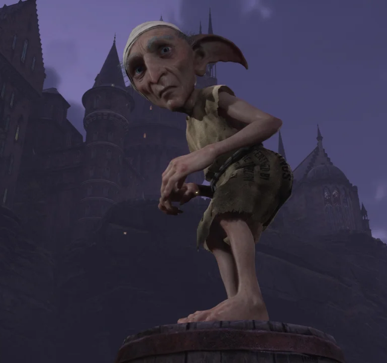

SLYTHERIN
Casa Slytherin
Slytherin, una de las cuatro casas de la ilustre escuela de magia Hogwarts, se caracteriza por su astucia, ambición, determinación y su valoración de la sangre pura. Fundada por Salazar Slytherin, esta casa valora el ingenio y la determinación, y acoge a aquellos estudiantes que muestran un fuerte sentido de auto-preservación y un deseo de alcanzar el éxito a cualquier costo. Los alumnos de Slytherin son conocidos por su astucia y su capacidad para alcanzar sus metas sin importar los obstáculos que se interpongan en su camino. Son individuos ambiciosos y determinados, dispuestos a hacer lo que sea necesario para alcanzar la grandeza y asegurar su propio éxito. Además de su ambición, los Slytherin también son reconocidos por su lealtad hacia los suyos. Son compañeros leales y protectores, dispuestos a defender a aquellos que consideran parte de su círculo íntimo y a luchar por lo que creen que es correcto. En Slytherin, se valora la determinación y el coraje para enfrentar los desafíos con audacia y resolución. Los alumnos son alentados a buscar el poder y la influencia, reconociendo que el mundo mágico es un lugar competitivo donde solo los más fuertes y ambiciosos pueden triunfar. En resumen, los Slytherin son estudiantes astutos y ambiciosos, cuya determinación y tenacidad los convierten en líderes naturales y figuras prominentes en la comunidad mágica de Hogwarts. Su ambición por el poder y la sangre pura es una parte fundamental de su identidad y valores.
Sala común de Slytherin
La sala común de Slytherin se encuentra en las profundidades de las mazmorras de Hogwarts. Para acceder a ella, los estudiantes deben dirigirse a las mazmorras del castillo, donde serán recibidos por una majestuosa serpiente de mármol que guarda la entrada. Una vez que la serpiente concede su permiso, se permitirá el acceso a los miembros de Slytherin. Una vez dentro, te encontrarás en el corazón de la sala común más grande de Hogwarts. El espacio está impregnado de una atmósfera fría y sombría, con una iluminación tenue que añade un toque de misterio al ambiente. A pesar de su aura oscura, la sala común ofrece amplios espacios para caminar y numerosos lugares para sentarse y relajarse. Grandes cuadros adornan las paredes, representando a antiguos miembros de Slytherin y eventos importantes en la historia de la casa. Además, encontrarás numerosas habitaciones privadas asignadas a estudiantes de diferentes años del colegio.
Jugabilidad
Únete a Slytherin en Hogwarts Legacy y adéntrate en un mundo de astucia, ambición y determinación. Como miembro de Slytherin, tendrás la oportunidad de explorar los secretos del mundo mágico junto a tu misterioso amigo Sebastian Sallow, cuyo secreto revelará nuevas capas de intriga y misterio a lo largo de tu aventura. Vistiendo el uniforme verde con detalles de serpientes, mostrarás tu orgullo por pertenecer a Slytherin y representarás los valores de astucia y determinación que caracterizan a esta casa. Además, mientras exploras el mundo mágico, tendrás más probabilidades de encontrar prendas de vestir de color verde que reflejen tu lealtad a Slytherin y a la astuta serpiente, el emblema de la casa. Un aspecto único de jugar en Slytherin es que todos los miembros de la casa te tratarán con respeto y cortesía, reconociendo tu pertenencia a una de las casas más prestigiosas de Hogwarts. Sin embargo, si juegas con alguna de las otras tres casas, es probable que los miembros de Slytherin te vean con desdén y se consideren superiores a ti, reflejando la rivalidad entre las casas de la escuela. La misión especial de Slytherin te llevará a conocer al Elfo doméstico llamado Scroope, sirviente del Director de Hogwarts, el profesor Black. Scroope revelará secretos inquietantes de la familia Black y te pedirá que busques un anillo perdido en una cueva del lago negro. Esta tarea desafiará tu ingenio y coraje mientras te enfrentas a los peligros que acechan en las profundidades del lago.
